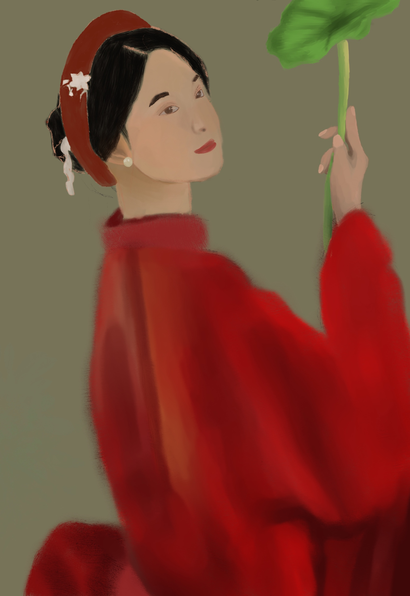

I'm Tina, I'm a student at Univerisity of Texas at Dallas, majoring in UX Design. I'm Passionate about creating meaningful user-centered experiences that connect design, emotion, and technology, and I've experienced in digital design, concept development, and presenting creative work to public audiences.
